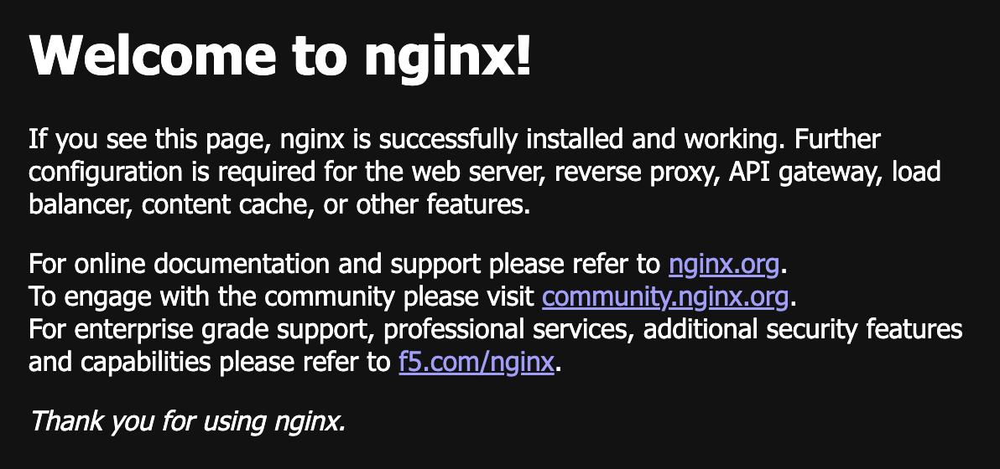

참고한 것들
개요
- NGINX Ingress Controller 가 나가리가 됐다. 그리고 Ingress 도 이제 더 이상 관리되지 않는다고 한다.
- 그래서 ingress 의 개선판인 Gateway API 를 사용해볼거고, Cilium 으로 이놈을 사용하도록 해보자.
1. Prerequisites
- Kube-proxy 대체하기 (Cilium) 가 되어있어야 한다.
- Gateway 하나 당 LB Service 가 하나 생성된다. 그래서 이놈을 위해서는 Kube-vip 나 Cilium LB IPAM 이 되어있어야 한다.
2. CRD 설치
CRD 버전
export GWAPI_VERSION=v1.6.1
- Gateway API 를 위한 CRD 가 설치되어있어야 한다. 요로코롬 설치하면 된다:
kubectl apply --server-side -f https://github.com/kubernetes-sigs/gateway-api/releases/download/${GWAPI_VERSION}/standard-install.yaml3. Helm value 업데이트
- 그냥 이것만 추가하면 된다.
gatewayAPI:
enabled: true- 그리고 helm 으로 설치:
helm -n system-cilium upgrade --install cilium cilium/cilium -f cilium.yaml4. 테스트
- 간단하게 NGINX 로 테스트해보자. 일단 deployment 와 service 를 만든다.
kubectl create deployment nginx --image nginx:stable
kubectl expose deployment nginx --name nginx --port 80- 그리고
Gateway를 하나 만든다.- 이놈에 대한 설명은 이거 를 참고하자.
apiVersion: gateway.networking.k8s.io/v1
kind: Gateway
metadata:
name: default
spec:
gatewayClassName: cilium
listeners:
- name: http
protocol: HTTP
port: 80
allowedRoutes:
namespaces:
from: All- 마지막으로 NGINX service 와
Gateway를 연결할 HTTPRoute 를 하나 만들자.
apiVersion: gateway.networking.k8s.io/v1
kind: HTTPRoute
metadata:
name: nginx
spec:
parentRefs:
- name: default # Gateway 이름
sectionName: http # Gateway listener 이름
rules:
- matches:
- path:
type: PathPrefix
value: /
backendRefs:
- name: nginx # NGINX 서비스 이름
port: 80- 그리고 LB IPAM 으로 설정한 IP 로 땋 들어가보면 달콤해진다.

- 이제 지우자.
kubectl delete httproute/nginx gateway/default deploy/nginx svc/nginx발견된 문제점들
TCPRoute
- July 30, 2026 기준 TCPRoute 가 안된다.